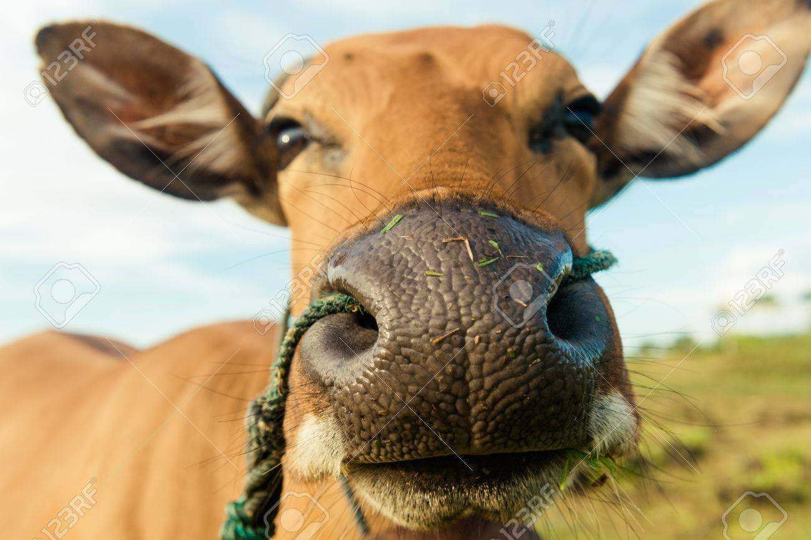
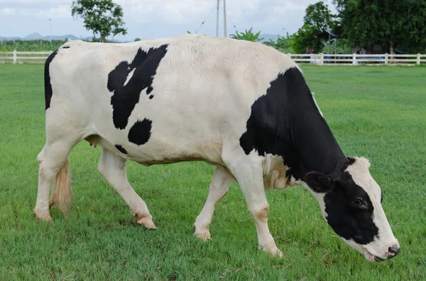

Vaca Doméstica
Bos taurus — família Bovidae
600
kg
20
anos
A vaca é um bovino domesticado amplamente criado para produção de leite, carne e couro.
Ruminante com quatro compartimentos estomacais e microbiota especializada.
Possui comportamento social, estabelecendo hierarquias nos rebanhos.
O manejo de pastagens e bem-estar influencia diretamente produtividade e saúde.
“Onde há pasto e sombra, o gado transforma sol e grama em vida.”
- Surgiu: ~10.500 anos (domesticação)
- Tipo: Mamífero
- Idade Média: 15–20 anos
- Macho adulto (touro): 900 kg
- Fêmea adulta: 600 kg
- Família: Bovidae
Ruminantes convertem fibras vegetais indigeríveis por humanos em nutrientes de alto valor.
Práticas sustentáveis reduzem emissões e melhoram a qualidade do solo.